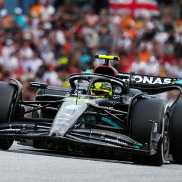

სპორტის სამყარომ ბოლო დროს განიცადა რამდენიმე მნიშვლელოვანი განვითარება, დაწყებული წესების ცვლილებებიდან მნიშვნელოვან შეჯიბრებებამდე. გადახედეთ ზოგიერთ ყველაზე გავლენიან გლობალურ ამბებს ამ თვეში;
ფორმულა ერთი: ვერსტაპენის დომინირება და შუასეზონური ცვლილებები.
ფორმულა 1-ის 2024 წლის სეზონი კვლავ ხაზს უსვამს მაქს ვერსტაპენის შთამბეჭდავ შესრულებას, მაგრამ მსოფლიო ჩემპიონატისათვის ბრძოლაში სხვა მძღოლებმაც ასევე მიიპყრეს ყურადღება ძლიერი შესრულებით. ამ მომენტისთვის ტოპ 5 მძღოლების პოზიციები არის:
| რეიტინგი | მძღოლი | გუნდი | ქულა | მოგება | პოდიუმი |
|---|---|---|---|---|---|
| 1 | მაქს ვერსტაპენი | რედ ბული | 354 | 7 | 12 |
| 2 | ლანდო ნორისი | მაკლარენი | 297 | 3 | 11 |
| 3 | შარლ ლეკლერკი | ფერარი | 275 | 3 | 10 |
| 4 | ოსკარ პიასტრი | მაკლარენი | 247 | 2 | 7 |
| 5 | კარლოს საინზი | ფერარი | 215 | 1 | 6 |
სეზონში განხორციელდა რამდენიმე შუა სეზონური ტექნიკური კორექცია, რომლის მიზნად ისახავს ტრასაზე კონკურენციის გაზრდას. ეს ცვლილებები ძირითადად ფოკუსირებულია აეროდინამიკაზე, რამაც გამოიწვია უფრო დაბალანსებული შესრულება გუნდებს შორის. სეზონის საბოლოო რბოლები გადამწყვეტი იქნება, რადგან გუნდები და მძღოლები მიზნად ისახავენ ძლიერ დასრულებას კონსტრუქტორთა და მძღოლთა ჩემპიონატებში.
ფეხბურთი: UEFA ჩემპიონთა ლიგის 70 წლის იუბილე
UEFA ჩემპიონთა ლიგა 70-ე სეზონს აღნიშნავს და შეჯიბრი ფეხბურთში კვლავ ერთ-ერთ ყველაზე პრესტიჟულად რჩება. 2024 წელს გუნდები რომლებიც არის: მანჩესტერ სითი, მიუნხენის ბაიერნი და მადრიდის რეალი, ტიტულის მთავარ კანდიდატებად ითვლებიან. UEFA-მ მოაწყო საიუბილეო ღონისძიები აღნიშნვა, სადაც ხაზგასმულია ტურნირის ისტორიის საკულტო და მნიშვნელოვანი მომენტები, მათ შორის სამახსოვრო ფინალი და ლეგენდარული ფეხბურთელების გამორჩეული შესრულება. გულშმატკივრები მოუთმენად მიჰყვებიან ჯგუფურ ეტაპებს, სადაც რამდენიმე აუტსაიდერი გუნდი აწყობს გასაოცას შესრულებას, რაც მატებს მღელვარებას ატმოსფეროში.
ჩოგბურთი: მოედანზე მწვრთნელობის შემოტანა
ამ მნიშვნელოვანი ნაბიჯით, ATP და WTA საშუალებას მისცემს მოთამაშეებს მოედანზე მწვრთნელობას 2025 წლის სეზონის დასაწყისიდან. ეს წესების ცვლილება საშუალებას აძლევს მოთამაშეებს მიიღონ ღჩევები მწვრთნელებისგან მატჩების განმავლობაში, რაც ადრე აკრძალული იყო ტურნირების უმრავლესობაში. წესი მიზნად ისახავს მატჩების ხარისხის გაუმჯობესებას მიმდევარ დროში სტრატეგიული კორექციის დაშვებით. თუმცა, ზოგიერთი მსაჯი ამტკიცებს, რომ ამას შეიძლება შეამციროს ინდივიდუალური გონებრივი გამოწვევა, რომლითაც ჩოგბურთი არის ცნობილი. ეს ახალი წესი 2024 წლის სეზონზე შემოწმდება შერჩეულ ტურნირებზე მის სრულ განხორციელებამდე.
E-სპორტები: გლობალური მიღწევისა და ოლიმპიური ჩართულობის გაფართოება
E-სპორტები აგრძელებს თავის სწრაფ გლობალურ ზრდას, ძირითადი ტურნირებით როგორიცაა League Of Legends მსოფლიო ჩემპიონატი, იზიდავს მილიონობით მაყურებელს სა სთავაზობს საპრიზო ფულს. ერთ-ერთი ყველაზე მნიშვნელოვანი განცხადება E-სპორტის საზოგადოებისთვის არის მისი დაგეგმილი შემოტანა 2028 წლის ლოს-ანჯელესის ოლიმპიადაში. მოსალოდნელია, რომ ეს ჩართვა გაზრდის E-სპორტის გლობალურ ხილვადობას და შემდგომ აღიარებას გაუწევს მას, როგორც კომპეტენციურ სპორტს. მაყურებლებისა სა სპონსორების მატებასთან ერთად, E-სპორტები ხდება ერთ-ერთი ფავორიტი გლობალურ სპორტულ ლანდშაფტში.